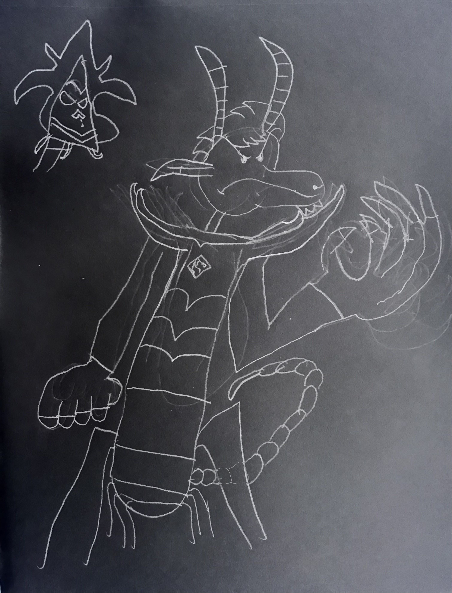
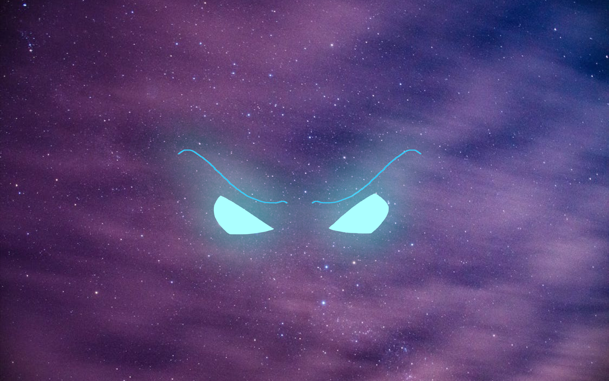

From Sketches to the Screen
When attempting to make a series or movie, the visual aspects of your project often involve concept art, storyboards or sketches. That is especially the case with cartoons. As such, it requires a bit of experience in drawing. It usually takes some time to finish your art, but it varies depending on the style and quality of what you're trying to convey. The tools also vary, from pencils to clay to even software.
If you're looking to do concept art, make sure you know what kind of tools you'll need for the job. There is an abundant amount of stuff required to make a good sketch, but It's recommended to teach yourself how to draw before getting in on the action.
For an example company with these capabilities, visit:
The Nickelodeon Animation website.  